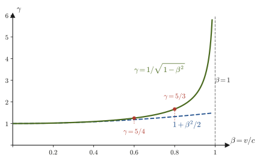

第54章ガリレイの相対性からローレンツ変換へ
走っている電車の中で，進行方向にボールを投げたとしよう．電車の中の人から見たボールの速さが $15\ \mathrm{m/s}$，電車の速さが $20\ \mathrm{m/s}$ なら，地面に立っている人から見たボールの速さは $35\ \mathrm{m/s}$ になる．高校物理で習った「速度の合成」（足し算）である．ところが，このごく自然な足し算が，光に対してだけは成り立たない．光源がどんな速さで動いていても，それを追いかける観測者がどんな速さで走っていても，真空中の光の速さは $c=299\,792\,458\ \mathrm{m/s}$ のまま変わらない——この，常識に反する事実を受け入れたときに，時間と空間の考え方を根本から作り直さなければならなくなる．それが，1905 年にアインシュタイン（Einstein）が示した特殊相対性理論（special theory of relativity）である．
この章では，まず高校でも使ってきた「座標系を変えても運動の法則は変わらない」という考え方（ガリレイの相対性）を，微分を使ってきちんと書き直す．次に，その考え方が電磁気学（マクスウェル方程式）と光の速さに対してはうまくいかないこと，19 世紀の終わりにマイケルソンとモーリーが行った歴史的な実験がその困難を決定的にしたことを見る．そして「物理法則はどの慣性系でも同じ形である」「光の速さはどの慣性系でも同じである」という 2 つの原理から，2 つの座標系の間の新しい変換則——ローレンツ変換——を，連立方程式を 1 行も飛ばさずに解いて導く．最後に，光速に比べて遅い運動ではローレンツ変換がガリレイ変換に戻ること，ローレンツ変換を行列で書くとどう見えるかを確かめる．
第VIII部（第54〜58章）の見取り図は次のとおりである．本章はその入口にあたる．
- 第54章（本章）：ガリレイの相対性 → 光速の謎とマイケルソン＝モーリーの実験 → 2 つの原理 → ローレンツ変換．
- 第55章：ローレンツ収縮・時間の遅れ・ミューオンの寿命・相対論的ドップラー効果・速度の変換則（ローレンツ変換の帰結）．
- 第56章：同時性の相対性，時空図，不変間隔と因果律，固有時，ラピディティ．
- 第57章：4 元ベクトルと計量，4 元運動量，$E=mc^2$，粒子の崩壊・衝突の運動学．
- 第58章：自然単位系 $c=\hbar=1$，電磁気学の 4 元形式（4 元電流・4 元ポテンシャル）．
この部は，素粒子物理学（姉妹編「素粒子物理学（AD 08）」）や相対論的量子力学（ディラック方程式など）を読むための準備でもある．そこでは，粒子の運動学を 4 元運動量で，電磁気学を 4 元ポテンシャルで，すべてローレンツ変換に対して形が変わらない形（共変な形）で書くところから議論が始まる．本章で導くローレンツ変換は，その全体の土台である．
- ガリレイ変換 $\bm{r}'=\bm{r}-\bm{v}t,\ t'=t$ のもとでニュートンの運動方程式の形が変わらないこと（ガリレイの相対性）の導出，および速度の合成
- ガリレイ変換のもとで波動方程式（マクスウェル方程式から出る電磁波の方程式）の形が変わってしまうこと，光の速さが観測者によって変わってしまうという困難（エーテル仮説）
- マイケルソン＝モーリーの実験の装置・予想される時間差 $\Delta t\approx(L/c)(v^2/c^2)$・干渉縞のずれ，1887 年の結果（ずれは見つからなかった）の意味
- アインシュタインの 2 つの原理（相対性原理・光速度不変の原理）
- 光の波面の式と線形変換の仮定から，ローレンツ変換 $x'=(x-vt)/\sqrt{1-(v/c)^2}$，$t'=(t-vx/c^2)/\sqrt{1-(v/c)^2}$ を導く手順（係数 $A,B,C,D$ を実際に解く）
- ローレンツ因子 $\gamma=1/\sqrt{1-\beta^2}$ の $\beta=v/c$ 依存性，$v\ll c$ でガリレイ変換に戻ること，行列で書いたローレンツ変換と逆変換
もとにしたノート：望月泰英『物理学ノート 特殊相対性理論』 pp. 1–3．
54.1 ガリレイの相対性
なめらかな線路を一定の速さでまっすぐ走る電車の中で，あなたは窓のカーテンを閉めて外が見えない状態にしたとする．このとき，ボールを真上に投げると手元に落ちてくるし，机の上のコップは動き出さない．電車が止まっているのか走っているのかを，電車の中の力学の実験だけで見分けることはできない．この経験を微分を使って書き直すのが，この節の目的である．
質量 $m\ [\mathrm{kg}]$ の質点（大きさを無視して1点とみなした物体）に力 $\bm{F}\ [\mathrm{N}]$ がはたらき，その位置が $\bm{r}=(x,y,z)$ であるとき，ニュートン（Newton）の運動方程式は
\begin{equation} m\frac{\dd^2\bm{r}}{\dd t^2}=\bm{F} \label{eq:54-eom} \end{equation}である（第2章 2.2）．左辺の $\dd^2\bm{r}/\dd t^2$（$\ddot{\bm{r}}$ とも書く．アール・ツードット，位置ベクトルを時刻 $t$ で 2 回微分したもの）は加速度である．ここで，質点の運動を 2 つの座標系から観測する．1 つは，地面に固定した座標系 S（原点 O，軸 $x,y,z$）である．もう 1 つは，S に対して一定の速度 $\bm{v}$ で等速直線運動をしている座標系 S′（原点 O′，軸 $x',y',z'$．軸の向きは S の軸と平行に保つ）である．S′ は，走っている電車に固定した座標系と思えばよい．S と S′ の原点は時刻 $t=0$ に一致していたとする．
すると，時刻 $t$ に O′ は S 系で $\bm{v}t$ の位置にある（図54.1）．質点 P の S 系での位置ベクトル $\bm{r}$（O から P へ）は，「O から O′ まで $\bm{v}t$，O′ から P まで $\bm{r}'$」というベクトルの足し算で表せるから $\bm{r}=\bm{v}t+\bm{r}'$，すなわち
\begin{equation} \bm{r}'=\bm{r}-\bm{v}t \label{eq:54-galilei-r} \end{equation}である．ここで $\bm{r}'$ は S′ 系で測った質点の位置ベクトル，$\bm{v}$ は時間によらない定ベクトル（大きさも向きも一定）である．また，S と S′ の時計は同じ時刻を指し続けるとする（$t'=t$）．この「時間は座標系によらず共通に流れる」という仮定は，日常の経験にはあまりに自然なので，普通は意識すらしない．しかしこの仮定こそが，後で見るように相対性理論で作り直されることになる．
定義54.1 ガリレイ変換
慣性系 S に対して一定の速度 $\bm{v}$ で動く座標系 S′ の座標・時刻 $(\bm{r}',t')$ を，S の座標・時刻 $(\bm{r},t)$ から
\begin{equation} \bm{r}'=\bm{r}-\bm{v}t,\qquad t'=t \label{eq:54-galilei} \end{equation}で定める変換をガリレイ変換（Galilean transformation）という．S′ が S の $x$ 軸の正の向きに速さ $v$ で動くときは，成分で書いて
$$ x'=x-vt,\qquad y'=y,\qquad z'=z,\qquad t'=t $$となる．ガリレオ・ガリレイ（Galileo Galilei）は，「等速で動く船の中の出来事は，港に停泊している船の中と区別できない」という趣旨の思考実験を書いた人物であり，この名前がつけられた．
では，運動方程式 \eqref{eq:54-eom} を S′ 系の言葉に書き直してみよう．S′ 系で観測される加速度 $\dd^2\bm{r}'/\dd t^2$ は，S 系での加速度とどう関係するだろうか．
導出：ガリレイ変換のもとでの加速度
式 \eqref{eq:54-galilei} より $t'=t$ なので，S′ 系での時間微分 $\dd/\dd t'$ は S 系での時間微分 $\dd/\dd t$ と同じである．式 \eqref{eq:54-galilei-r} の両辺を $t$ で 1 回微分する．$\bm{v}$ は定ベクトルなので，各成分は $\dd(v_xt)/\dd t=v_x$ のように $t$ の 1 次式の微分であり，$\dd(\bm{v}t)/\dd t=\bm{v}$ となる：
$$ \frac{\dd\bm{r}'}{\dd t}=\frac{\dd\bm{r}}{\dd t}-\bm{v}=\dot{\bm{r}}-\bm{v} $$これは速度の変換則である（S′ 系の速度＝S 系の速度 $-\ \bm{v}$）．もう一度 $t$ で微分する．$\bm{v}$ は時間によらない定ベクトルだから $\dd\bm{v}/\dd t=\bm{0}$ である：
\begin{equation} \frac{\dd^2}{\dd t^2}\bm{r}'=\frac{\dd}{\dd t}\left(\dot{\bm{r}}-\bm{v}\right)=\frac{\dd^2\bm{r}}{\dd t^2}-\bm{0}=\frac{\dd^2\bm{r}}{\dd t^2} \label{eq:54-acc-invariant} \end{equation}すなわち，加速度は S 系でも S′ 系でも同じ値になる．この結果を運動方程式 \eqref{eq:54-eom} の左辺に代入すれば，$m\,\dd^2\bm{r}/\dd t^2=m\,\dd^2\bm{r}'/\dd t^2$ なので，
\begin{equation} m\frac{\dd^2\bm{r}'}{\dd t^2}=\bm{F} \label{eq:54-eom-prime} \end{equation}が得られる．これは S 系の式 \eqref{eq:54-eom} と全く同じ形である．
（導出終わり）
法則54.1 ガリレイの相対性
等速運動する座標系（慣性系）どうしで，運動の基礎方程式（ニュートンの運動方程式）の形は変わらない．これをガリレイの相対性（Galilean relativity）という．
イメージ：「ごく当たり前」の意味
この結論は，実感としてはごく当たり前のことである．等速で走る新幹線の中でボールを真上に投げ上げると，ボールは手元に落ちてくる．電車の中の人から見ると，これは単なる鉛直投げ上げ（重力 $-mg$ だけを受ける運動）である．一方，地面に立っている人から見ると，ボールは電車と同じ水平速度をもったまま放物線を描く．2 人の見ている軌道は違うが，どちらも同じ形の運動方程式 $m\ddot{\bm{r}}=\bm{F}$（$\bm{F}=-mg\bm{e}_z$．$z$ 軸を鉛直上向きにとり，$\bm{e}_z$ をその向きの単位ベクトルとする）を満たしている．だから，運動の実験だけからは，「どちらの座標系が本当に静止していて，どちらが動いているのか」を決めることはできない．力学の法則から見れば，等速で動いている座標系はどれも対等なのである（高校で習う「慣性系」がこれにあたる）．
注意：この証明で大切だった 2 つの仮定
(i) 式 \eqref{eq:54-acc-invariant} で $\bm{v}$ が定ベクトルであることを使った．もし S′ が加速していて $\bm{v}$ が時間とともに変わるなら，$\dd\bm{v}/\dd t\neq\bm{0}$ なので $m\ddot{\bm{r}}'=\bm{F}-m\dot{\bm{v}}$ となり，運動方程式に余分な項（慣性力）が現れる（第9章 9.1）．ガリレイの相対性が成り立つのは，等速運動する座標系どうしだけである．
(ii) 力 $\bm{F}$ は S 系と S′ 系で同じ値であるとした．これは，力が質点どうしの相対的な位置（$\bm{r}_1-\bm{r}_2$）だけで決まる場合（万有引力，クーロン力，ばねの力など）には，$\bm{r}_1'-\bm{r}_2'=(\bm{r}_1-\bm{v}t)-(\bm{r}_2-\bm{v}t)=\bm{r}_1-\bm{r}_2$ となって確かに成り立つ．また，抵抗力のように速度に依存する力も，それを決めているのが「相手の物体（空気など）に対する相対速度」であれば，相対速度は $\dot{\bm{r}}-\bm{u}\to(\dot{\bm{r}}-\bm{v})-(\bm{u}-\bm{v})$ と変わらないので，やはり同じ値になる（演習54.1）．
例題54.1 電車の中で投げたボールの速さ
地面に固定した座標系を S，一定の速さ $V=20\ \mathrm{m/s}$ で直線上を走る電車に固定した座標系を S′ とし，電車の進行方向を $x$ 軸の正の向きにとる．時刻 $t=0$ に，電車の中の人が（そのときの人の位置を S，S′ の原点として）水平に，電車に対して速さ $15\ \mathrm{m/s}$ でボールを投げた．(a) 進行方向に投げたとき，(b) 進行方向と逆向きに投げたとき，地面から見たボールの速度をそれぞれ求めよ．(c) (a) の場合について，$2.0\ \mathrm{s}$ 後のボールの位置を，電車の中の人と地面の人がそれぞれ座標で表せ．ただし，ボールにはたらく力は無視する．
解答 ガリレイ変換 $x'=x-Vt,\ t'=t$ より $x=x'+Vt$．これを $t$ で微分すると，S 系での速度 $u=\dot x$ と S′ 系での速度 $u'=\dot x'$ の間に
$$ u=u'+V $$が成り立つ．(a) $u'=+15\ \mathrm{m/s}$ なので $u=15+20=35\ \mathrm{m/s}$（$+x$ 向き）．(b) $u'=-15\ \mathrm{m/s}$ なので $u=-15+20=5\ \mathrm{m/s}$．地面から見ると，後ろ向きに投げたボールも前向きに進む（電車のほうが速いため）．(c) ボールにはたらく力を無視するので，S′ 系で等速直線運動し，$x'=u't'=15\times2.0=30\ \mathrm{m}$．地面の人の座標は $x=x'+Vt=30+20\times2.0=70\ \mathrm{m}$．これは $x=ut=35\times2.0=70\ \mathrm{m}$ とも一致する．
例題54.2 運動量と運動エネルギーは座標系によって値が違う
質量 $2\ \mathrm{kg}$ の物体 A が速さ $3\ \mathrm{m/s}$ で進み，同じ直線上で静止していた質量 $1\ \mathrm{kg}$ の物体 B に衝突して，完全非弾性衝突（衝突後，くっついて一体で運動する）をした．S 系（地面）と，S 系の $+x$ 向きに一定の速さ $1\ \mathrm{m/s}$ で動く S′ 系の両方で，衝突前後の運動量の和と運動エネルギーの和を求め，運動量保存則が両方で成り立つこと，運動エネルギーの減少量が両方で等しいことを確かめよ．
解答 S 系：衝突後の共通の速度を $u_{\mathrm f}$ とすると，運動量保存則より $2\times3+1\times0=(2+1)u_{\mathrm f}$，$u_{\mathrm f}=2\ \mathrm{m/s}$．運動量の和は前後とも $6\ \mathrm{kg\,m/s}$．運動エネルギーの和は，衝突前が $\frac12\cdot2\cdot3^2+0=9\ \mathrm J$，衝突後が $\frac12\cdot3\cdot2^2=6\ \mathrm J$ で，減少量は $3\ \mathrm J$．
S′ 系：速度は $u'=u-1$ で変換されるので，衝突前は A が $2\ \mathrm{m/s}$，B が $-1\ \mathrm{m/s}$，衝突後は $u_{\mathrm f}'=2-1=1\ \mathrm{m/s}$．運動量の和は，衝突前が $2\times2+1\times(-1)=3\ \mathrm{kg\,m/s}$，衝突後が $3\times1=3\ \mathrm{kg\,m/s}$ で，S′ 系でも保存する（値は S 系と違うが，前後で等しい）．運動エネルギーの和は，衝突前が $\frac12\cdot2\cdot2^2+\frac12\cdot1\cdot(-1)^2=4.5\ \mathrm J$，衝突後が $\frac12\cdot3\cdot1^2=1.5\ \mathrm J$ で，減少量は $3\ \mathrm J$ となり，S 系の減少量と一致する．
このように，運動量や運動エネルギーの値そのものは座標系によって変わるが（$\bm{p}'=\bm{p}-m\bm{v}$，$K'=K-m\bm{v}\cdot\dot{\bm{r}}+\frac12mv^2$），運動方程式，運動量保存則，エネルギーの減少量（熱などに変わった量）のような「法則の形」は，どの慣性系でも変わらない．
54.2 光の速さの謎 — マクスウェル方程式とガリレイ変換
前節で見たように，ニュートンの力学は「等速で動く座標系はどれも対等である」というガリレイの相対性を満たしている．では，電磁気学（第V部）はどうだろうか．真空中の電磁波は，第42章 42.3 で導いたとおり，波動方程式
\begin{equation} \nabla^2\bm{E}=\frac{1}{c^2}\frac{\partial^2\bm{E}}{\partial t^2},\qquad c=\frac{1}{\sqrt{\varepsilon_0\mu_0}}=299\,792\,458\ \mathrm{m/s} \label{eq:54-wave-vec} \end{equation}を満たし，光は波の進む速さが $c$ の電磁波である．ここに現れる $c$ は，静電気の実験で決まる真空の誘電率 $\varepsilon_0$ と，電流と磁場の実験で決まる真空の透磁率 $\mu_0$ だけから決まる定数である．そこで自然な疑問が生じる．この $c$ は，いったい「誰から見た」速さなのだろうか．
なお，式 \eqref{eq:54-wave-vec} の記号を説明しておく．$\nabla^2=\dfrac{\partial^2}{\partial x^2}+\dfrac{\partial^2}{\partial y^2}+\dfrac{\partial^2}{\partial z^2}$（ナブラ・ツー．ラプラシアン）で，$\partial$（パーシャル）は，他の変数を固定して 1 つの変数だけで微分する偏微分の記号である（大学数学 第6章）．
音波の場合は答えが明らかである．音の速さ $340\ \mathrm{m/s}$ は，音を伝える媒質である空気に対しての速さである．静止した空気の中で成り立つ音の波動方程式を，空気に対して動いている座標系で見直せば，音の速さは向きによって変わって見える（例題54.4）．19 世紀の物理学者たちは，光も波なのだから，光を伝える媒質があるはずだと考えた．この仮想の媒質をエーテル（luminiferous ether，光媒質）と呼ぶ．式 \eqref{eq:54-wave-vec} が成り立つのは「エーテルに対して静止した座標系」だけで，そこに対して速さ $v$ で動く座標系では，光の速さは $c-v$ や $c+v$ のように変わって見えるはずだ，という考えである．
考察：エーテル仮説は無理な発想ではなかった
宇宙空間を光（星の光）が伝わってくる以上，何かがその波を伝えているはずだ，という発想は，当時としては自然であった．また，太陽のまわりを公転する地球は，エーテルに対して少なくとも年間を通じて向きの変わる速度をもつはずである．地球の公転速度は約 $3.0\times10^4\ \mathrm{m/s}$ で，光速との比は $v/c\approx10^{-4}$ である．18 世紀にブラッドレー（Bradley）が発見した恒星の光行差（地球が動いているため，星の見える方向が年周期で $v/c\approx10^{-4}\ \mathrm{rad}$，角度にして約 $20''$ ずれる現象）は，この $v/c$ の大きさと合っており，光が地球の運動の影響を受けることを示していた．
本当にガリレイ変換のもとで光の波動方程式が形を変えてしまうのか，実際に計算して確かめてみよう．話を簡単にするため，$x$ 方向にだけ進む平面波を考える．このとき電場は $y,z$ によらないので $\partial^2E/\partial y^2=\partial^2E/\partial z^2=0$，すなわち $\nabla^2E=\partial^2E/\partial x^2$ となる．電場の 1 つの成分を $E(x,t)$ と書くと，式 \eqref{eq:54-wave-vec} は
\begin{equation} \frac{\partial^2E}{\partial x^2}-\frac{1}{c^2}\frac{\partial^2E}{\partial t^2}=0 \label{eq:54-wave-S} \end{equation}となる（S 系での方程式）．
導出：ガリレイ変換すると波動方程式の形が変わる
S′ が S の $+x$ 向きに速さ $v$ で動いているとして，ガリレイ変換 $x'=x-vt$，$t'=t$（定義54.1）で S′ 系の変数 $(x',t')$ に移る．同じ電場を S′ 系の関数として $E'(x',t')$ と書く．すなわち $E(x,t)=E'(x-vt,\,t)$ である．合成関数の偏微分（大学数学 第6章 6.4）を使うと，$\partial x'/\partial x=1$，$\partial t'/\partial x=0$，$\partial x'/\partial t=-v$，$\partial t'/\partial t=1$ より
$$ \frac{\partial}{\partial x}=\frac{\partial x'}{\partial x}\frac{\partial}{\partial x'}+\frac{\partial t'}{\partial x}\frac{\partial}{\partial t'}=\frac{\partial}{\partial x'},\qquad \frac{\partial}{\partial t}=\frac{\partial x'}{\partial t}\frac{\partial}{\partial x'}+\frac{\partial t'}{\partial t}\frac{\partial}{\partial t'}=-v\frac{\partial}{\partial x'}+\frac{\partial}{\partial t'} $$である．2 階微分は，この操作を 2 回くり返せばよい．$E'$ の 2 階の偏微分が連続で，微分の順序を入れ替えられる（大学数学 第6章 6.3，シュワルツの定理）とすると，
$$ \frac{\partial^2}{\partial x^2}=\frac{\partial^2}{\partial x'^2},\qquad \frac{\partial^2}{\partial t^2}=\left(\frac{\partial}{\partial t'}-v\frac{\partial}{\partial x'}\right)^2=\frac{\partial^2}{\partial t'^2}-2v\frac{\partial^2}{\partial x'\partial t'}+v^2\frac{\partial^2}{\partial x'^2} $$となる．これを式 \eqref{eq:54-wave-S} に代入して，$\partial^2/\partial x'^2$ の項をまとめると，
\begin{equation} \left(1-\frac{v^2}{c^2}\right)\frac{\partial^2E'}{\partial x'^2}+\frac{2v}{c^2}\frac{\partial^2E'}{\partial x'\partial t'}-\frac{1}{c^2}\frac{\partial^2E'}{\partial t'^2}=0 \label{eq:54-wave-Sprime} \end{equation}が得られる．これは S 系の式 \eqref{eq:54-wave-S} とは違う形をしている：$x'$ と $t'$ の混ざった項 $\dfrac{2v}{c^2}\dfrac{\partial^2E'}{\partial x'\partial t'}$ が新しく現れ，$\partial^2/\partial x'^2$ の係数も $1$ から $1-v^2/c^2$ に変わってしまった．なお，$y'=y$，$z'=z$ なので $\partial^2/\partial y^2$，$\partial^2/\partial z^2$ は変わらず，3 次元で考えても同じ余分な項が現れる．
（導出終わり）
この結果を，「進む波」で確かめよう．S 系で $+x$ 向きに速さ $c$ で進む波は $E(x,t)=f(x-ct)$（$f$ は任意の関数）と書ける（第11章 11.2）．$x=x'+vt'$，$t=t'$ を代入すると $E'(x',t')=f\bigl(x'-(c-v)t'\bigr)$ となり，S′ 系では速さ $c-v$ で進む波に見える．逆向きに進む波 $f(x+ct)$ は速さ $c+v$ に見える．つまり，ガリレイ変換を信じる限り，マクスウェル方程式（が導く波動方程式）は S′ 系ではもはや光速 $c$ の波を与えないのである．
考察：3 つの逃げ道
ニュートン力学（式 \eqref{eq:54-eom}）はガリレイ変換に対して形が変わらず，マクスウェル方程式（式 \eqref{eq:54-wave-vec}）は形が変わってしまう．この食い違いを解消する道は 3 通りしかない．(a) ガリレイ変換もニュートン力学も正しく，マクスウェル方程式は「エーテルに対して静止した特別な座標系」でだけ成り立つ（エーテル仮説）．(b) マクスウェル方程式がどの慣性系でも成り立つ（相対性原理を電磁気学にも認める）ためには，ガリレイ変換のほうを書き換えなければならず，したがってニュートン力学も修正が必要になる．(c) マクスウェル方程式そのものが誤りである．(c) は，ヘルツ（Hertz）の電磁波の実験などで否定された．(a) と (b) のどちらが正しいかは，「地球のようなエーテルに対して動いている座標系で，光の速さが向きによって違うかどうか」を測ればわかる．これが，次の節のマイケルソン＝モーリーの実験である．
例題54.3 エーテル仮説が予想する光の速さ
エーテルに対して地球が公転速度 $v=3.0\times10^4\ \mathrm{m/s}$ で動いているとする（エーテルは静止していて地球に引きずられないと仮定）．地球上で，地球の進行方向に進む光と，その逆向きに進む光の速さは，エーテル仮説（ガリレイ変換）ではそれぞれいくらになるか．$c=299\,792\,458\ \mathrm{m/s}$ とし，$v/c$ の値も求めよ．
解答 地球に固定した座標系 S′ から見た光の速さは，S（エーテル系）での光の速さ $c$ から座標系の速度を引く（速度の合成）．地球の進行方向に進む光は
$$ c-v=299\,792\,458-30\,000=299\,762\,458\ \mathrm{m/s} $$逆向きに進む光は
$$ c+v=299\,792\,458+30\,000=299\,822\,458\ \mathrm{m/s} $$となる．比は $v/c=3.0\times10^4/(2.998\times10^8)\approx1.0\times10^{-4}$ で，2 つの速さの差 $2v=6.0\times10^4\ \mathrm{m/s}$ は，光速のわずか $2\times10^{-4}$（$0.02\ \%$）である．したがって，光の速さそのものを $10^{-4}$ の精度で向きを変えて測ることができれば，エーテル仮説は検証できることになる．しかし光速はあまりに大きいので，往復で 1 回測るだけでは，この精度は当時の実験ではとても得られない．干渉を使った巧妙な方法が必要になる（次節）．
例題54.4 音の速さと座標系
静止した空気の中での音の速さを $340\ \mathrm{m/s}$ とする．(a) 空気中を $20\ \mathrm{m/s}$ で走る電車に固定した座標系から，進行方向に進む音の速さと，逆向きに進む音の速さはいくらに見えるか．(b) 窓を閉めきった電車の中で，進行方向と逆向きに音の速さを測っても，向きによる違いが見つからないのはなぜか．(c) この違いは，光の場合になぜ大きな謎になるのか．
解答 (a) 音が空気に対して速さ $340\ \mathrm{m/s}$ で伝わるとすると，ガリレイ変換より，電車から見た速さは進行方向に進む音で $340-20=320\ \mathrm{m/s}$，逆向きに進む音で $340+20=360\ \mathrm{m/s}$ になる．(b) 窓を閉めきった電車の中の空気は電車と一緒に動いている．つまり，電車の中の観測者にとって，音を伝える媒質（空気）は静止している．だから電車内では，音の速さは向きによらず $340\ \mathrm{m/s}$ である．(c) 光の場合，光を伝える「媒質」のエーテルは，空気と違って地球に引きずられて一緒に動くとは限らない．もしエーテルが地球と一緒に動いていないなら，地球上では (a) と同じ「エーテル風」が吹いていることになり，光の速さは向きによって違って見えるはずである．一方，光を「媒質を必要としない波」と考えるなら，どの座標系でも光の速さが同じだという常識外れの性質を受け入れなければならない．どちらの考え方も，日常の速度の合成則では説明できない．
54.3 マイケルソン＝モーリーの実験
前節の最後に挙げた問い——「エーテルに対して動いている地球の上で，光の速さは向きによって違うのか」——に決着をつけようとしたのが，1887 年にアメリカ合衆国のマイケルソン（A. A. Michelson）とモーリー（E. W. Morley）が行った実験である．光速は $3\times10^8\ \mathrm{m/s}$ もあり，地球の公転速度との比 $v/c$ は $10^{-4}$ 程度にすぎない．光が往復するのにかかる時間を直接くらべて $10^{-4}$ の差を見つけるのは無理だが，光の干渉を使えば，波長よりも小さな光路のずれまで検出できる（第16章 16.2）．そこでマイケルソンは，光を 2 つに分けて別々の道を通したあと，再び重ねて干渉させる装置（マイケルソン干渉計，Michelson interferometer）を考案した．
54.3.1 装置のしくみ
装置の概略を 図54.3 に示す．光源から出た光は，光の一部を反射し一部を透過させる半透明鏡（half mirror，ビームスプリッター）で 2 つのビームに分けられる．一方は半透明鏡を透過して腕 1（長さ $L$）の先の鏡 M$_1$ で反射され，もう一方は反射されて，腕 1 に直角な腕 2（同じく長さ $L$）の先の鏡 M$_2$ で反射される．2 つのビームは半透明鏡にもどって重なり合い，観測者（望遠鏡）のところで干渉縞をつくる．装置全体は地球とともに動いている．もし装置がエーテルの中を速さ $v$ で腕 1 の向きに動いているなら，2 つの腕を光が往復するのにかかる時間に差が生じ，干渉縞の位置が変わるはずである．
54.3.2 エーテル仮説が予想する時間差
エーテルに対して静止した座標系（S 系）から見る．S 系では光は（向きによらず）速さ $c$ で進む．一方，干渉計は S 系の $+x$ 方向（腕 1 の向き）に速さ $v$ で動いている（$v\lt c$）．半透明鏡から出た 2 つのビームが，2 本の腕を往復して再び半透明鏡に戻るまでの時間 $t_\parallel$（腕 1），$t_\perp$（腕 2）をそれぞれ求めよう．
導出：2 本の腕を往復する時間
腕 1（運動方向に平行な腕） 時刻 $0$ に半透明鏡（S 系の位置 $x=0$）から光が出るとする．鏡 M$_1$ は，はじめ $x=L$ にあり，そこから速さ $v$ で $+x$ 方向に逃げていく．光が M$_1$ に追いつく時刻を $t_1$ とすると，その時刻の光の位置は $ct_1$，鏡の位置は $L+vt_1$ なので，
$$ ct_1=L+vt_1\qquad\therefore\ t_1=\frac{L}{c-v} $$である．反射された光は $-x$ 方向へ進み，向かってくる半透明鏡に出会う．反射した時刻 $t_1$ の光の位置は $L+vt_1$，出会うまでの時間を $t_2$ とすると，出会う時刻 $t_1+t_2$ の光の位置は $L+vt_1-ct_2$，半透明鏡の位置は $v(t_1+t_2)$ なので，
$$ L+vt_1-ct_2=v(t_1+t_2)\quad\Longrightarrow\quad L-ct_2=vt_2\qquad\therefore\ t_2=\frac{L}{c+v} $$である．したがって腕 1 の往復時間は，通分して $(c+v)+(c-v)=2c$，$(c-v)(c+v)=c^2-v^2$ を使うと，
\begin{equation} t_\parallel=t_1+t_2=\frac{L}{c-v}+\frac{L}{c+v}=\frac{2Lc}{c^2-v^2}=\frac{2L}{c}\,\frac{1}{1-\beta^2},\qquad\beta\equiv\frac vc \label{eq:54-tpar} \end{equation}となる．
腕 2（運動方向に垂直な腕） 光が半透明鏡から出て M$_2$ で反射され，半透明鏡にもどるまでの全時間を $t_\perp$ とする．この間に装置全体は $x$ 方向に $vt_\perp$ だけ動くので，S 系から見た光の経路は，底辺が $vt_\perp$，高さが $L$ の二等辺三角形の 2 つの等しい斜辺になる（図54.4）．片方の斜辺の長さは $c\,t_\perp/2$ であり，三平方の定理（ピタゴラスの定理）より
$$ \left(\frac{ct_\perp}{2}\right)^2=L^2+\left(\frac{vt_\perp}{2}\right)^2 $$$t_\perp$ について解くと，$\dfrac{(c^2-v^2)t_\perp^2}{4}=L^2$，$t_\perp\gt0$ より
\begin{equation} t_\perp=\frac{2L}{\sqrt{c^2-v^2}}=\frac{2L}{c}\,\frac{1}{\sqrt{1-\beta^2}} \label{eq:54-tperp} \end{equation}である．
時間差 2 つの往復時間の差は，$\beta\ll1$ のときのテイラー展開（大学数学 第4章 4.2）$(1-\beta^2)^{-1}=1+\beta^2+\cdots$，$(1-\beta^2)^{-1/2}=1+\tfrac12\beta^2+\cdots$ を使うと，
\begin{equation} \Delta t=t_\parallel-t_\perp=\frac{2L}{c}\left[\frac{1}{1-\beta^2}-\frac{1}{\sqrt{1-\beta^2}}\right]\approx\frac{2L}{c}\left[\left(1+\beta^2\right)-\left(1+\frac{\beta^2}{2}\right)\right]=\frac{L}{c}\,\frac{v^2}{c^2} \label{eq:54-dt} \end{equation}となる（$\beta^4$ 以上の項は無視した）．単位は $\mathrm{m}/(\mathrm{m/s})=\mathrm{s}$ で，時間になっている．
（導出終わり）
イメージ：なぜ平行な腕のほうが時間がかかるのか
川を往復する船にたとえるとわかりやすい．流れの速さ $v$，船の（静水に対する）速さ $c$ として，川の流れに沿って距離 $L$ の下流の岸まで行って戻ってくる時間 $t_\parallel=L/(c+v)+L/(c-v)$ は，同じ距離 $L$ だけ流れに直角に対岸まで行って戻る時間 $t_\perp=2L/\sqrt{c^2-v^2}$ よりも長い．上りでは大きく遅れ，下りではあまり得をしないからである．マイケルソンとモーリーの干渉計では，「川の流れ」がエーテル風，「船」が光にあたる．
54.3.3 干渉縞のずれ
時間差 $\Delta t$ は，2 つのビームの光路差 $c\Delta t$ に対応する．光路差が 1 波長 $\lambda$ だけ変わると干渉縞は 1 本分ずれる（第16章 16.2）ので，式 \eqref{eq:54-dt} より，エーテル仮説が予想する縞のずれの本数は
\begin{equation} N=\frac{c\Delta t}{\lambda}=\frac{L}{\lambda}\frac{v^2}{c^2} \label{eq:54-fringe} \end{equation}である．実際の実験では，2 本の腕の長さが完全には等しくないので，エーテル風の効果がなくても光路差はゼロでなく，縞が見える．エーテル風の効果は，装置全体を水平面内で $90^\circ$ 回転させたときの縞の動きとして現れる．$90^\circ$ 回転すると腕 1 と腕 2 の役割が入れ替わり，$t_\parallel$ と $t_\perp$ が入れ替わるので，時間差は $\Delta t\to-\Delta t$ になり，縞は合計で $2N=2L\beta^2/\lambda$ 本ずれるはずである．マイケルソンとモーリーは，装置を水銀に浮かべた重い石の台に載せて，ゆっくりなめらかに回転できるようにした．また，光を鏡で何度も往復させて，実効的な腕の長さを $L\approx11\ \mathrm m$ にした．
例題54.5 予想される縞のずれ
実効的な腕の長さ $L=11\ \mathrm m$，光の波長 $\lambda=5.5\times10^{-7}\ \mathrm m$（可視光の典型的な値），エーテルに対する装置の速さを地球の公転速度 $v=3.0\times10^4\ \mathrm{m/s}$ として，式 \eqref{eq:54-dt}，式 \eqref{eq:54-fringe} から時間差 $\Delta t$ と，装置を $90^\circ$ 回転させたときの縞のずれの本数を求めよ．$c=3.00\times10^8\ \mathrm{m/s}$ としてよい．
解答 $\beta=v/c=3.0\times10^4/(3.00\times10^8)=1.0\times10^{-4}$，$\beta^2=1.0\times10^{-8}$．
$$ \frac{L}{c}=\frac{11\ \mathrm m}{3.00\times10^8\ \mathrm{m/s}}=3.67\times10^{-8}\ \mathrm s $$なので，$\beta^2$（無次元）をかけて
$$ \Delta t=\frac{L}{c}\,\beta^2=3.67\times10^{-8}\ \mathrm s\times1.0\times10^{-8}=3.7\times10^{-16}\ \mathrm s $$光路差は $c\Delta t=3.00\times10^8\times3.67\times10^{-16}=1.1\times10^{-7}\ \mathrm m$ である．したがって式 \eqref{eq:54-fringe} より
$$ N=\frac{c\Delta t}{\lambda}=\frac{1.1\times10^{-7}\ \mathrm m}{5.5\times10^{-7}\ \mathrm m}=0.20 $$で，$90^\circ$ 回転すると縞は $2N=0.40$ 本ずれると予想される．これは縞の間隔の 40% にあたるので，注意深く観測すれば十分に見つけられる大きさである．（厳密な式 \eqref{eq:54-tpar}，\eqref{eq:54-tperp} で $\Delta t$ を計算しても，厳密値と近似値の比は $1+\tfrac54\beta^2\approx1+1.3\times10^{-8}$ で，事実上同じ値である．）
54.3.4 1887 年の結果
マイケルソンとモーリーは，装置をゆっくり回転させながら縞の位置を何度も読み取った（地球の自転によって，1 日のうちにも装置の向きとエーテル風の向きの関係は変わる）．その結果，観測された縞のずれは，予想される約 $0.4$ 本の $1/40$ 以下（約 $0.01$ 本以下）にすぎず，測定誤差の範囲でゼロだった．エーテル風の効果は見つからなかったのである．その後も，多くの研究者が装置を改良し，季節を変えて繰り返し実験を行ったが，結果は同じであり，現在ではさらに何桁も高い精度の実験でも，光の速さが向きによって違うという証拠は見つかっていない．
例題54.6 なぜこの結果がエーテル仮説への反証になるのか
(a) たまたま観測の日に地球がエーテルに対して静止していた，という説明は成り立つか．(b) 観測された縞のずれが予想の $1/40$ 以下だったことから，地球のエーテルに対する速さの上限を見積もれ．(c) この結果を受けて，どのような考え方が可能になるか．
解答 (a) 地球は太陽のまわりを約 $3.0\times10^4\ \mathrm{m/s}$ で公転しているので，$6$ か月後には公転の速度の向きが正反対になる．たまたまある日，地球の公転速度とエーテルに対する太陽系の速度が打ち消し合って，地球がエーテルに対して一瞬静止していたとしよう．それでも $6$ か月後には公転の向きが逆になるので，地球のエーテルに対する速さは約 $2\times3.0\times10^4=6.0\times10^4\ \mathrm{m/s}$ になる．その後，季節を変えて繰り返された実験でも結果が変わらなかったのだから，「たまたま」では説明できない．(b) 縞のずれは式 \eqref{eq:54-fringe} のとおり $v^2$ に比例する．ずれが $1/40$ 以下ということは $v^2\le v_{\mathrm E}^2/40$（$v_{\mathrm E}=3.0\times10^4\ \mathrm{m/s}$ は公転速度）なので，$v\le v_{\mathrm E}/\sqrt{40}=3.0\times10^4/6.32\approx4.7\times10^3\ \mathrm{m/s}$．つまりエーテルに対する地球の速さは，公転速度の約 $1/6$ 以下でしかありえない．(c) エーテルが存在してガリレイ変換が成り立つ，という前節の逃げ道 (a) は，事実上否定される．エーテルが地球に完全に引きずられるという説明も，恒星の光行差（前節）と両立しない．残された道は，光の速さが観測者の運動によらず一定であるとして，時間・空間の考え方のほうを変えることである．
考察：ローレンツ＝フィッツジェラルド収縮と，アインシュタインの立場
この「ゼロ」の結果を救うために，フィッツジェラルド（FitzGerald，1889 年）とローレンツ（Lorentz，1892 年）はそれぞれ，「運動方向に平行な物体の長さは，エーテルに対する速さ $v$ のとき $\sqrt{1-\beta^2}$ 倍に縮む」という仮説を提案した．実際，腕 1 の長さ $L$ を $L\sqrt{1-\beta^2}$ に置き換えると，式 \eqref{eq:54-tpar} は
$$ t_\parallel=\frac{2L\sqrt{1-\beta^2}}{c}\frac{1}{1-\beta^2}=\frac{2L}{c}\frac{1}{\sqrt{1-\beta^2}}=t_\perp $$となり，時間差は $\beta$ の値によらず厳密にゼロになる．しかしこの仮説は，エーテルの存在を保ったまま結果を説明するためだけに付け加えられた，やや不自然なものだった．これに対して 1905 年にアインシュタインは，エーテルという特別な座標系そのものを考えず，「光の速さはどの座標系でも同じである」という原理を出発点にして，長さの縮みも時間の遅れも自然に出てくることを示した．次の節でその 2 つの原理を述べ，第55章では長さの収縮（本質的に上の $\sqrt{1-\beta^2}$ と同じ因子）を，ローレンツ変換から導く．
応用：干渉計は今も第一線の測定器
マイケルソン干渉計は，19 世紀の「失敗した」実験の道具にとどまらず，現在もさまざまな場所で活躍している．赤外線を材料に当てて分子の振動を調べるフーリエ変換赤外分光（FT-IR，材料科学で広く使われる）は，干渉計の一方の鏡を動かして得られる干渉信号をフーリエ変換（大学数学 第30章）して，スペクトルを求める装置である．また，2015 年に重力波を初めて直接検出した LIGO も，腕の長さが $4\ \mathrm{km}$ の巨大なマイケルソン干渉計である．腕の長さが $10^{-18}\ \mathrm{m}$ 程度変わるのを検出できる，という桁外れの精度も，「光路差を干渉縞で読む」という同じ原理に基づいている．
54.4 アインシュタインの 2 つの原理
マイケルソン＝モーリーの実験で見つからなかった「エーテル風」は，前節の見方に立つと，光の速さが観測者の運動に依存しないことを示唆している．この矛盾を解決するために，アインシュタイン（Einstein）は 1905 年の論文「運動している物体の電気力学について」で，次の 2 つの原理を出発点として採用した．
法則54.2 相対性原理
物理法則は，どの慣性系から見ても同じ形をしている．すなわち，慣性系は互いに対等であり，特別な（絶対静止の）慣性系は存在しない．
法則54.3 光速度不変の原理
真空中の光の伝わる速さは，どの慣性系から見ても同じ値 $c$ である（光源や観測者の運動によらない）．
相対性原理は，前節で見たガリレイの相対性（法則54.1）を，力学だけでなく電磁気学を含むすべての物理法則へ拡張したものである．力学だけに限らずマクスウェル方程式もすべての慣性系で同じ形だと認めるなら，光の速さ $c=1/\sqrt{\varepsilon_0\mu_0}$ は，マクスウェル方程式の中の定数として，どの慣性系でも同じ値になる．つまり光速度不変の原理は，相対性原理を電磁気学に適用した結果ともいえるが，歴史的にも実験的にも独立に重要なので，別の原理として書いておく．
注意：光速度不変の原理は 2 つのことを主張している
(i) 光源が動いていても，光の速さは $c$ である（電車の中でボールを進行方向に投げると速さが足し算されるが，ヘッドライトの光では足し算されない）．(ii) 観測者が動いていても，光の速さは $c$ である（光を追いかけて走っても，光との相対速度は減らない）．どちらも，前節までの「速度の足し算」（ガリレイ変換）からは出てこない．なお，「光の速さ $c$」は真空中の値である．物質中では，速さは $c/n$（$n$ は屈折率．第13章 13.3）になり，観測者から見てそれがどう変わるかは別の問題である．
この 2 つの原理は，ガリレイ変換 $x'=x-vt,\ t'=t$ のもとでは，同時には成り立たない．実際，$t=0$ に原点 O（このとき O′ も原点に一致）から出た光の波面上の 1 点を考えよう．S 系でこの点が $x=ct$ にあるとする．光速度不変の原理によると S′ 系でも同じ光の点は $x'=ct'$ にあるはずだが，ガリレイ変換を使うと $x'=x-vt=(c-v)t=(c-v)t'\neq ct'$ となって（$v\neq0$ のとき）矛盾する．つまり，2 つの原理を両方認めるには，ガリレイ変換 $x'=x-vt$，$t'=t$ のどちらかを（あるいは両方を）作り直さなければならない．アインシュタインは，そこで「時間は座標系によらず共通に流れる」という，あまりに自然で誰も疑わなかった仮定 $t'=t$ を手放した．新しい変換則を，2 つの原理だけから導くのが，次の節の目標である．
イメージ：光を追いかける少年
アインシュタインは少年時代に，「光と同じ速さで光を追いかけたら，光はどう見えるだろうか」と考えたと伝えられている．ガリレイ変換に従えば，光と同じ速さで走る人には，光は止まった波（電場と磁場が空間に固定された，時間変化のない波）に見えるはずである．しかし，マクスウェル方程式には，そのような「止まった電磁波」の解は存在しない．相対性原理が正しいなら，このような座標系は許されない．したがって，光の速さ $c$ は，どの観測者にとっても「追いつけない速さ」でなければならない——これが光速度不変の原理の 1 つの見方である．
応用：$c$ は測る量から「定義された値」へ
光速度不変の原理を前提にすると，光の速さは自然界のすべての観測者に共通の量になる．そこで 1983 年に，メートルの定義そのものが「光が真空中で $1/299\,792\,458$ 秒の間に進む距離」と改められ，$c=299\,792\,458\ \mathrm{m/s}$ は測定値ではなく定義値になった（2019 年の SI 改定でも同じである）．長さの標準を，時間（原子時計）と $c$ から決めるというこの考え方は，衛星から届く電波の伝わる時間に光速をかけて距離に換算し，位置を求める GPS にも通じている．
例題54.7 日常の速さでは光速度不変が「わからない」理由
時速 $100\ \mathrm{km}$（$27.8\ \mathrm{m/s}$）で走る自動車のヘッドライトの光の速さを，(a) ガリレイ変換による速度の足し算で考えた場合，(b) 光速度不変の原理で考えた場合，地面から見て何 $\mathrm{m/s}$ か．また，(a) と (b) の相対的な違いの大きさ $v/c$ を求め，日常でこの違いに気づけない理由を述べよ．$c=299\,792\,458\ \mathrm{m/s}$ とする．
解答 $v=100\ \mathrm{km/h}=100\times10^3/3600=27.8\ \mathrm{m/s}$．(a) ガリレイ変換では $c+v=299\,792\,458+27.8=299\,792\,485.8\ \mathrm{m/s}$．(b) 光速度不変の原理では $299\,792\,458\ \mathrm{m/s}$ のまま．違いの相対的な大きさは
$$ \frac vc=\frac{27.8\ \mathrm{m/s}}{2.998\times10^8\ \mathrm{m/s}}=9.3\times10^{-8} $$で，1 億分の 1 に近い小ささである．日常の速さ $v$ は光速 $c$ に比べてあまりに小さいので，ガリレイ変換の結果と光速度不変の原理の結果の食い違いは，人間の感覚はもちろん，普通の測定でも見つからない．食い違いが目に見えるようになるのは，$v$ が $c$ の何割にもなる高速の世界や，マイケルソン＝モーリーのような極端に精密な測定においてである．（なお，高速で動く光源から出る光の速さが $c$ に足し算されないことは，加速器でつくった光速に近い速さの中間子の崩壊で出る光子の速さの測定などでも確かめられている．）
54.5 ローレンツ変換の導出
2 つの原理（法則54.2，法則54.3）だけから，2 つの慣性系の間の座標変換を導こう．この節の計算は少し長いが，どの式変形も高校数学の連立方程式と 2 次式の展開だけでできる．一歩ずつ確かめながら進んでほしい．
この部（第VIII部）の約束：座標系と記号
第VIII部では，次の記号を全章で共通に使う．
- 座標系：慣性系 S（座標 $x,y,z$，時刻 $t$）と，S に対して $x$ 軸の正の向きに一定の速さ $v$ で動く慣性系 S′（座標 $x',y',z'$，時刻 $t'$）．軸の向きは平行に保つ．
- $\beta$ と $\gamma$：光速に対する速さの比 $\beta=v/c$（ベータ．無次元），ローレンツ因子 $\gamma=1/\sqrt{1-\beta^2}$（ガンマ．無次元で $\gamma\ge1$）．
- 時間座標：時刻に光速をかけて長さの次元にそろえた $x^0=ct$ を使うことがある（$x^1=x,\ x^2=y,\ x^3=z$）．ここで $x^0,x^1,x^2,x^3$ の右肩の数字は「乗」ではなく成分の番号（$\mu=0,1,2,3$）である．4 つの成分をまとめて 4 元ベクトル $x^\mu$ と呼び，詳しい扱いは第57章で丁寧に説明する．
- 添字と縮約記法：$x^\mu$ のように右上に番号をつけたものを上付き添字，$x_\mu$ のように右下につけたものを下付き添字という．計量が $(+,-,-,-)$ なので，$x_0=ct$，$x_i=-x^i$（$i=1,2,3$）と定める．同じ添字が上と下に 1 回ずつ現れたら，$0$ から $3$ までの和をとる約束をアインシュタインの縮約記法という．たとえば $x'^\mu=\Lambda^\mu{}_\nu\,x^\nu$ は $x'^\mu=\sum_{\nu=0}^{3}\Lambda^\mu{}_\nu\,x^\nu$ の意味で，54.7 節の式 \eqref{eq:54-matrix4} を 1 つの式にまとめたものである．詳しくは第57章．
- 計量の符号：後で現れる不変量 $s^2=(x^0)^2-(x^1)^2-(x^2)^2-(x^3)^2=c^2t^2-x^2-y^2-z^2$ のように，時間成分を「$+$」，空間成分を「$-$」とする $(+,-,-,-)$ の規約を使う．素粒子物理学（姉妹編 AD 08）の多くの教科書と同じ規約である．逆に $(-,+,+,+)$ をとる教科書もあるので，他書を読むときは符号の規約を最初に確認すること．
54.5.1 設定
互いに速度 $v$ で等速直線運動をする 2 つの座標系 S と S′ を考える（図54.5）．S 系と S′ 系は，あるとき原点が重なる瞬間があり，その瞬間を，どちらの系でも時刻 $t=t'=0$ とする．この瞬間，原点 O（$=$O′）から光が発せられたとして，光の波面がそれぞれの座標系でどのように広がるかを考える．
54.5.2 光の波面の式
時刻 $t=t'=0$ に原点から出た光は，S 系では，時刻 $t$ に原点から距離 $ct$ の球面の上にある（光の速さは $c$．法則54.3）．すなわち，波面の上の点 $(x,y,z)$ は
\begin{equation} x^2+y^2+z^2=c^2t^2 \label{eq:54-front-S} \end{equation}を満たす．S′ 系でも光の速さは同じ $c$ なので（法則54.3），S′ 系の座標 $(x',y',z')$，時刻 $t'$ について，同様に
\begin{equation} x'^2+y'^2+z'^2=c^2t'^2 \label{eq:54-front-Sprime} \end{equation}が成り立つ．どちらも「右辺 $-$ 左辺 $=0$」の形にまとめれば，同じ光の波面（同じ光の到達点という「出来事」の集まり）に対する 2 つの表現として，
\begin{equation} x^2+y^2+z^2-c^2t^2=x'^2+y'^2+z'^2-c^2t'^2=0 \label{eq:54-front-both} \end{equation}と書ける．この式は，「光の波面の上の点」という特別な出来事についてしか主張していない．しかし，この形に注目して，S 系の座標 $(x,y,z,t)$ から S′ 系の座標 $(x',y',z',t')$ への変換を探すのが以下の方針である．
54.5.3 問題の簡単化
計算を簡単にするため，S′ の運動方向（$x$ 軸）に垂直な座標は変わらない，すなわち
\begin{equation} y=y',\qquad z=z' \label{eq:54-yz} \end{equation}であると仮定する．波面上の点では，式 \eqref{eq:54-front-S} より $x^2-c^2t^2=-(y^2+z^2)$，式 \eqref{eq:54-front-Sprime} より $x'^2-c^2t'^2=-(y'^2+z'^2)$ である．式 \eqref{eq:54-yz} により右辺どうしは等しいから，
\begin{equation} x^2-c^2t^2=x'^2-c^2t'^2 \label{eq:54-invariant-x} \end{equation}が（波面上の点で）成り立つ．ここまでは波面上の点についてしか言えていないが，次の 54.5.4 で述べる線形性の仮定のもとでは，この式はすべての出来事 $(x,t)$ で成り立つ（下の考察）．以下ではこれを出発点にする．これ以降は $(x,t)$ と $(x',t')$ の 2 変数の問題になる．
なぜ？：$y=y'$，$z=z'$ としてよいのか
運動方向に垂直な長さが変わらないことは，相対性原理から次のように理解できる．S 系に静止している棒と S′ 系に静止している棒を用意する．どちらも運動方向に垂直（$y$ 方向）で，静止しているときの長さは等しい（$1\ \mathrm m$）．S′ の運動にともなって 2 本の棒がすれちがうとき，棒の端に付けたペンで相手の棒に印を付けるとする．もし S から見て S′ の棒のほうが（運動のせいで）短く見えるなら，S の棒のペンだけが相手の棒に印を付け，S′ のペンは相手の棒に届かない．ところが相対性原理により，S′ から見た状況は S から見た状況と全く同じ（S と S′ は対等）なので，S′ から見ると S の棒のほうが短く，S′ のペンだけが印を付けることになる．印が付いたかどうかは座標系によらない「事実」なので，これは矛盾である．したがって，垂直方向の長さは変わらず，$y'=y$，$z'=z$ でなければならない．（運動方向の長さについては，第55章で調べる．）
考察：式 \eqref{eq:54-invariant-x} は光の波面上の点だけでなく，すべての出来事について成り立つ
式 \eqref{eq:54-front-both} は，光の波面という特別な点でしか成り立たない式である（両辺とも $0$）．一方，式 \eqref{eq:54-invariant-x} は，一般の出来事 $(x,t)$ に対して両辺が等しい，という強い主張である．この 2 つがなぜつながるのかを説明しておく．
次の 54.5.4 で説明するように，座標変換は 1 次式（線形）であると考えられる．このとき $Q(x,t)=x^2-c^2t^2$ と $Q'=x'^2-c^2t'^2$ はどちらも $x$ と $ct$ の 2 次式である．光の波面の上の点（$x=\pm ct$）では $Q=0$ と $Q'=0$ が同時に成り立つ．一般に，2 次式 $ax^2+b\,x(ct)+d\,(ct)^2$ が直線 $x=ct$ と $x=-ct$ の上で $0$ になる条件は，$a+b+d=0$ と $a-b+d=0$ であり，これを解くと $b=0$，$d=-a$ となる．つまり $ax^2-a(ct)^2=a\,Q$ の形でなければならない．したがって，一般の出来事について $Q'=K\,Q$ となる定数 $K$ が存在する（$K$ は S′ の速さ $v$ だけで決まる）．S′ から S を見ると，S は速度 $-v$ で動いているので，同じ議論で $Q=K(-v)\,Q'$ となる．空間に向きの区別はない（$K(-v)=K(v)$）ので $Q=K\,Q'=K^2\,Q$，したがって $K^2=1$ である．$v\to0$ で $K\to1$ となる（連続性）ので，$K=+1$，すなわち $Q'=Q$ である．
54.5.4 線形変換の仮定
次に，$(x,ct)$ から $(x',ct')$ への変換の形を仮定する．S と S′ は慣性系であり，どちらから見ても，力がはたらかない物体は等速直線運動をする．一方の座標系で「$x$ が $t$ の 1 次式で変わる（等速直線運動）」という関係が，他方の座標系でも同じ形（1 次式）になるためには，座標変換は 1 次式（線形）でなければならない（もし 2 次式以上の項が入ると，一方で等速の運動が他方で加速運動に見えてしまう．また，空間にも時間にも特別な場所や時刻がない（一様である）ことも，変換が 1 次式になる理由である）．S と S′ の原点は $t=t'=0$ で一致するので，定数項はない．そこで，時間座標を長さの次元にそろえた $ct$ を使って，
\begin{equation} \begin{cases}x'=Ax+B\,ct\\ ct'=Cx+D\,ct\end{cases} \label{eq:54-linear} \end{equation}という形で表し，定数 $A,B,C,D$（$v$ と $c$ だけで決まる，無次元の数）を求める．つまり，2 つの原理と，式 \eqref{eq:54-invariant-x}，式 \eqref{eq:54-linear} を満たす変換をすべて求めるのが問題である．
54.5.5 係数 $A,B,C,D$ を求める
式 \eqref{eq:54-linear} を式 \eqref{eq:54-invariant-x} に代入して，$x$ と $ct$ について整理しよう．未知数は $A,B,C,D$ の 4 つである．
導出：連立方程式を解いて $A,B,C,D$ を決める
(1) 不変量の条件から 3 つの式を出す． 式 \eqref{eq:54-invariant-x} の右辺に式 \eqref{eq:54-linear} を代入し，2 乗を展開すると，
$$ x'^2-c^2t'^2=(Ax+B\,ct)^2-(Cx+D\,ct)^2 =(A^2-C^2)\,x^2+2(AB-CD)\,x\,(ct)+(B^2-D^2)\,(ct)^2 $$である．これが任意の $x,t$ について $x^2-c^2t^2=x^2\cdot1+x\,(ct)\cdot0+(ct)^2\cdot(-1)$ に等しいためには，$x^2$，$x\,(ct)$，$(ct)^2$ の各項の係数が等しくなければならない（$x$ と $ct$ を独立に変えられるので，多項式の恒等式の係数比較が使える）：
\begin{align} A^2-C^2&=1 \label{eq:54-abcd-1}\\ AB-CD&=0 \label{eq:54-abcd-2}\\ B^2-D^2&=-1 \label{eq:54-abcd-3} \end{align}(2) 4 つ目の式：S′ の原点の運動． 式 \eqref{eq:54-abcd-1}–\eqref{eq:54-abcd-3} は 3 つの式なので，4 つの未知数を決めるには，もう 1 つ条件が必要である．S′ の原点（$x'=0$ の点）は，S 系から見ると速さ $v$ で $+x$ 方向に動いているので，位置は $x=vt$ である．そこで $x'=0$ かつ $x=vt$ を式 \eqref{eq:54-linear} の第 1 式に代入すると $0=Avt+B\,ct$，これがどんな時刻 $t$ でも成り立つので $Av+Bc=0$，すなわち
\begin{equation} B=-\beta A,\qquad\beta=\frac vc \label{eq:54-abcd-4} \end{equation}(3) 連立方程式を解く． 式 \eqref{eq:54-abcd-4} を式 \eqref{eq:54-abcd-3} に代入して $D$ の 2 乗を求め，式 \eqref{eq:54-abcd-1} からは $C$ の 2 乗を求める：
$$ D^2=B^2+1=1+\beta^2A^2,\qquad C^2=A^2-1 $$また式 \eqref{eq:54-abcd-2} と式 \eqref{eq:54-abcd-4} から $CD=AB=-\beta A^2$ である．この両辺を 2 乗して，上の $C^2,D^2$ を代入すると，
$$ C^2D^2=\beta^2A^4\quad\Longrightarrow\quad(A^2-1)(1+\beta^2A^2)=\beta^2A^4 $$左辺を展開すると $A^2+\beta^2A^4-1-\beta^2A^2$ なので，両辺の $\beta^2A^4$ が消えて
$$ A^2-1-\beta^2A^2=0\quad\Longrightarrow\quad A^2(1-\beta^2)=1\quad\Longrightarrow\quad A^2=\frac{1}{1-\beta^2}=\gamma^2 $$となる．$v\to0$ のとき $x'\to x$（すなわち $A\to1$）にならなければならないので（座標軸の向きを反転させない），$A=+\gamma$ を選ぶ．すると $B=-\beta\gamma$，また
$$ C^2=\gamma^2-1=\frac{1-(1-\beta^2)}{1-\beta^2}=\beta^2\gamma^2,\qquad D^2=1+\beta^2\gamma^2=\frac{(1-\beta^2)+\beta^2}{1-\beta^2}=\gamma^2 $$だから $C=\pm\beta\gamma$，$D=\pm\gamma$ である．$CD=-\beta\gamma^2\lt0$ なので $C$ と $D$ は異符号であり，$v\to0$ で $t'\to t$（$D\to1$）になるべきことから $D=+\gamma$，したがって $C=-\beta\gamma$ に決まる．結局，
\begin{equation} A=D=\gamma,\qquad B=C=-\beta\gamma,\qquad\gamma=\frac{1}{\sqrt{1-\beta^2}} \label{eq:54-abcd-sol} \end{equation}(4) 確かめ． 式 \eqref{eq:54-linear} に式 \eqref{eq:54-abcd-sol} を代入したものは $x'=\gamma(x-\beta ct)$，$ct'=\gamma(ct-\beta x)$ であり，実際に $x'^2-(ct')^2=\gamma^2\bigl[(x-\beta ct)^2-(ct-\beta x)^2\bigr]=\gamma^2(1-\beta^2)(x^2-c^2t^2)=x^2-c^2t^2$ となって，式 \eqref{eq:54-invariant-x} が確かに成り立つ（途中で $x\,(ct)$ の項は $-2\beta+2\beta=0$ で消える）．
（導出終わり）
54.5.6 ローレンツ変換
式 \eqref{eq:54-linear} に式 \eqref{eq:54-abcd-sol} を代入すると $x'=\gamma(x-\beta ct)=\gamma(x-vt)$，$ct'=\gamma(ct-\beta x)$ である．後者を $c$ で割って時刻 $t'$ の式にすると，$t'=\gamma(t-\beta x/c)=\gamma(t-vx/c^2)$ となる．垂直方向の式 \eqref{eq:54-yz} とあわせて，次の結果を得る．
定理54.1 ローレンツ変換
慣性系 S に対して，$x$ 軸の正の向きに一定の速さ $v$ で動く慣性系 S′ の座標 $(x',y',z')$ と時刻 $t'$ は，S 系の座標・時刻 $(x,y,z,t)$ から
\begin{equation} \begin{cases} \displaystyle x'=\frac{x-vt}{\sqrt{1-(v/c)^2}}=\gamma\,(x-vt)\\[3mm] y'=y,\qquad z'=z\\[1mm] \displaystyle t'=\frac{t-\dfrac{v}{c^2}x}{\sqrt{1-(v/c)^2}}=\gamma\left(t-\frac{v}{c^2}x\right) \end{cases} \label{eq:54-lorentz} \end{equation}で与えられる．これをローレンツ変換（Lorentz transformation）という．
名前について
この変換の名は，オランダのローレンツ（H. A. Lorentz）が，マクスウェル方程式の形を変えない座標変換として 19 世紀末から 20 世紀初めに見いだしたことによる．ローレンツはこれをエーテルに対して運動する物体の電磁気学の枠組みで考えたが，アインシュタインは 1905 年に，上のように 2 つの原理だけからこの変換を導き，「時間」と「空間」の考え方そのものが変わることを示した．
注意：式 \eqref{eq:54-lorentz} で「$x$ が混ざる」のは時刻の式である
ガリレイ変換 $t'=t$ に対して，ローレンツ変換では時刻 $t'$ の式に位置 $x$ が入り込んでいる（$-vx/c^2$ の項）．これは，S′ から見た「同じ時刻」が S から見た「同じ時刻」と一致しないこと（同時性の相対性）を意味している．この帰結は第55章と第56章で詳しく調べる．また，$x$ の式でも係数 $\gamma$ が付いていて，$x'=x-vt$ そのものではない．
例題54.8 ローレンツ変換による出来事の座標の計算
S′ が S の $+x$ 方向に $v=0.6c$ で動いている．$c=3.00\times10^8\ \mathrm{m/s}$ とする．S 系で次の 2 つの出来事の座標が与えられている．(A) $x=300\ \mathrm m$，$t=1.0\ \mathrm{\mu s}$（$=1.0\times10^{-6}\ \mathrm s$），(B) $x=600\ \mathrm m$，$t=1.0\ \mathrm{\mu s}$．S′ 系での座標 $x',t'$ を求めよ．また，(A) は原点 O から出た光の波面上の点であることを確かめよ．
解答 $\beta=0.6$，$\gamma=1/\sqrt{1-0.36}=1/0.8=1.25$．$ct=3.00\times10^8\times1.0\times10^{-6}=300\ \mathrm m$ である．式 \eqref{eq:54-abcd-sol} の形 $x'=\gamma(x-\beta ct)$，$ct'=\gamma(ct-\beta x)$ を使うと，
(A)：$x'=1.25\,(300-0.6\times300)=1.25\times120=150\ \mathrm m$，$ct'=1.25\,(300-0.6\times300)=150\ \mathrm m$．よって $t'=150/(3.00\times10^8)=5.0\times10^{-7}\ \mathrm s=0.50\ \mathrm{\mu s}$．(A) は $x=ct$（$300=300$）を満たすので O から出た光の波面上にある．S′ でも $x'=ct'$（$150=150$）で，やはり波面上にある．
(B)：$x'=1.25\,(600-0.6\times300)=1.25\times420=525\ \mathrm m$，$ct'=1.25\,(300-0.6\times600)=1.25\times(-60)=-75\ \mathrm m$．よって $t'=-75/(3.00\times10^8)=-2.5\times10^{-7}\ \mathrm s=-0.25\ \mathrm{\mu s}$．
確かめ：$x^2-(ct)^2$ は (A) で $300^2-300^2=0$，S′ でも $150^2-150^2=0$．(B) では $600^2-300^2=270\,000\ \mathrm m^2$，S′ で $525^2-75^2=275\,625-5\,625=270\,000\ \mathrm m^2$ と一致する．なお (B) では S 系の時刻 $t=+1.0\ \mathrm{\mu s}$（原点の光の出た時刻 $t=0$ より後）が，S′ 系では $t'=-0.25\ \mathrm{\mu s}$（原点の光の出た時刻 $t'=0$ より前）になっている．このように，出来事の時間の前後関係が座標系によって入れ替わることさえある（(B) は光が届く範囲 $\abs{x}\le ct$ の外にあり，光でも結べない 2 つの出来事だからである．因果律との関係は第56章で調べる）．
例題54.9 光の進む向きによらず $x'=\pm ct'$ になる
ローレンツ変換 \eqref{eq:54-lorentz} が，光速度不変の原理を満たしていることを直接確かめよ．すなわち，S 系で $+x$ 向きに進む光 $x=ct$ と，$-x$ 向きに進む光 $x=-ct$ が，S′ 系でもそれぞれ $x'=ct'$，$x'=-ct'$ を満たすことを示せ．
解答 $x'=\gamma(x-\beta ct)$，$ct'=\gamma(ct-\beta x)$ を使う．$+x$ 向きの光 $x=ct$ では，
$$ x'=\gamma(ct-\beta ct)=\gamma(1-\beta)ct,\qquad ct'=\gamma(ct-\beta ct)=\gamma(1-\beta)ct $$なので $x'=ct'$ である．$-x$ 向きの光 $x=-ct$ では，
$$ x'=\gamma(-ct-\beta ct)=-\gamma(1+\beta)ct,\qquad ct'=\gamma(ct+\beta ct)=\gamma(1+\beta)ct $$なので $x'=-ct'$ である．どちらの向きでも S′ 系の光の速さは $\abs{x'/t'}=c$ で，$v$ にもよらない．こうして，ガリレイ変換（$x'=(c-v)t$）では成り立たなかった光速度不変が，ローレンツ変換では確かに成り立っていることがわかる．
54.6 ローレンツ因子 $\gamma$ とガリレイ変換への極限
ローレンツ変換 \eqref{eq:54-lorentz} は，$v/c$ という 1 つの数だけで決まる因子 $\gamma$ を含んでいる．この節では，$\gamma$ がどんな値をとるか，そして $v$ が $c$ よりずっと小さいときには，ローレンツ変換が私たちの見慣れたガリレイ変換にほとんど一致することを確かめる．高校物理の世界（日常の速さ）でニュートン力学とガリレイ変換が完璧に見えていた理由が，ここではっきりする．
定義54.2 $\beta$ とローレンツ因子 $\gamma$
速さ $v$ の光速 $c$ に対する比を $\beta=v/c$，ローレンツ因子（Lorentz factor）を
\begin{equation} \gamma=\frac{1}{\sqrt{1-\beta^2}}=\frac{1}{\sqrt{1-(v/c)^2}} \label{eq:54-gamma-def} \end{equation}と定義する．$\beta,\gamma$ はどちらも無次元の量である．
54.6.1 $\gamma$ の $\beta$ 依存性
$\gamma$ の値を調べよう（図54.6，表54.1）．$0\le\beta\lt1$ のとき，根号の中身 $1-\beta^2$ は $1$（$\beta=0$）から $0$（$\beta\to1$）まで単調に減るので，$\gamma$ は次の性質をもつ．(i) $\beta=0$ で $\gamma=1$，それ以外では $\gamma\gt1$．(ii) $\beta$ とともに単調に増える．(iii) $\beta\to1$（$v\to c$）で $\gamma\to\infty$ に発散する．たとえば $\beta=0.6$ では $\gamma=1/\sqrt{1-0.36}=1/0.8=5/4$，$\beta=0.8$ では $\gamma=1/\sqrt{1-0.64}=1/0.6=5/3$ である．

| $\beta$ | $v\ [\mathrm{m/s}]$ | $\gamma$ | 近似 $1+\beta^2/2$ |
|---|---|---|---|
| $0.01$ | $3.0\times10^{6}$ | $1.00005$ | $1.00005$ |
| $0.1$ | $3.0\times10^{7}$ | $1.00504$ | $1.00500$ |
| $0.3$ | $9.0\times10^{7}$ | $1.04828$ | $1.04500$ |
| $0.5$ | $1.5\times10^{8}$ | $1.15470$ | $1.12500$ |
| $0.6$ | $1.8\times10^{8}$ | $1.25000$ | $1.18000$ |
| $0.8$ | $2.4\times10^{8}$ | $1.66667$ | $1.32000$ |
| $0.9$ | $2.7\times10^{8}$ | $2.29416$ | $1.40500$ |
| $0.99$ | $2.97\times10^{8}$ | $7.08881$ | $1.49005$ |
| $0.999$ | $2.995\times10^{8}$ | $22.3663$ | $1.49900$ |
考察：$v\ge c$ になるとどうなるか
$\beta\ge1$，すなわち $v\ge c$ とすると，$1-\beta^2\le0$ になり，$v=c$ では $\gamma$ が無限大，$v\gt c$ では根号の中が負になって $\gamma$ は実数でなくなる．このとき式 \eqref{eq:54-lorentz} の $x',t'$ は実数にならず，観測される座標として意味をなさない．数学的には，ローレンツ変換で結ばれる慣性系の相対速度は $c$ 未満（$\abs{v}\lt c$）でなければならない，ということである．物理的には，もし S′ が光速 $c$ で動いていたとすれば S′ には光が止まって見えることになり，光速度不変の原理（法則54.3）と矛盾する（前節の「光を追いかける少年」）．また第57章では，質量のある物体に速さ $c$ を与えるには無限大のエネルギーが必要になることを，$E=\gamma mc^2$ から示す．以上から，質量をもつ物体の速さは $c$ を超えられないのである．
54.6.2 $v\ll c$ でガリレイ変換にもどる
$\beta\ll1$（$v\ll c$）のとき，$\gamma$ を $\beta^2$ のべきで展開しよう．一般の実数 $\alpha$ について，$\abs{\varepsilon}\ll1$ のとき $(1+\varepsilon)^\alpha\approx1+\alpha\varepsilon+\dfrac{\alpha(\alpha-1)}{2}\varepsilon^2+\cdots$ と書ける（テイラー展開の 2 項展開．大学数学 第4章 4.2）．$\alpha=-\tfrac12$，$\varepsilon=-\beta^2$ とおくと，
\begin{equation} \gamma=(1-\beta^2)^{-1/2}=1+\frac12\beta^2+\frac38\beta^4+\cdots\approx1+\frac12\left(\frac vc\right)^2 \label{eq:54-gamma-taylor} \end{equation}である（$\dfrac{\alpha(\alpha-1)}{2}=\dfrac{(-1/2)(-3/2)}{2}=\dfrac38$，$\varepsilon^2=\beta^4$）．したがって，$v\ll c$ なら $\gamma\approx1$ であり，ローレンツ変換 \eqref{eq:54-lorentz} の $x'$ の式は
$$ x'=\gamma(x-vt)\approx x-vt $$となる．時刻の式は $t'=\gamma\left(t-\dfrac{v}{c^2}x\right)\approx t-\dfrac{v}{c^2}x$ である．ここで補正項 $vx/c^2$ の大きさを $t$ と比べると，$x/t=u$ を物体の速さとして
$$ \frac{vx/c^2}{t}=\frac{v}{c}\cdot\frac{u}{c}=\beta\,\frac uc $$である．物体の速さ $u$ も $v$ も光速よりずっと小さければ，この比は $\beta^2$ 程度かそれ以下のごく小さい数になり，補正項は無視できて $t'\approx t$ となる．以上をまとめると，
\begin{equation} x'\approx x-vt,\qquad t'\approx t\qquad(v\ll c,\ \ u\ll c) \label{eq:54-galilei-limit} \end{equation}となり，ガリレイ変換（定義54.1）にもどる．
注意：$v/c\approx0$ のとき，ローレンツ変換はガリレイ変換に近づく
ここまでの結果は，「$v/c\approx0$ のときはガリレイ変換 $x'=x-vt$，$t'=t$ に近づく」と要約できる．これは，ローレンツ変換が正しいことの重要な確認である．ローレンツ変換が私たちの日常的な速さの世界（高校物理のニュートン力学）を破壊しないためには，$v\ll c$ でガリレイ変換にもどらなければならないからである．光速を $c\to\infty$ の極限にとる（$\beta\to0$）と，$\gamma\to1$，$vx/c^2\to0$ となって，ローレンツ変換は厳密にガリレイ変換になる．「光の速さが無限に速い世界」がガリレイ＝ニュートンの世界なのである．
例題54.10 $\gamma$ の計算とテイラー近似の精度
(a) $v=0.6c$ のときの $\gamma$ を求めよ．(b) $v=0.1c$ のときの $\gamma$ を厳密な式で求め，近似式 $\gamma\approx1+\beta^2/2$ の相対誤差を見積もれ．(c) $\beta=0.6$ で同じ近似を使ったときの相対誤差も求めよ．
解答 (a) $\beta=0.6$ なので $\gamma=1/\sqrt{1-0.6^2}=1/\sqrt{0.64}=1/0.8=1.25$．(b) $\beta=0.1$：$\gamma=1/\sqrt{1-0.01}=1/\sqrt{0.99}=1.0050378\ldots$，近似は $1+0.01/2=1.005$ である．相対誤差は $(1.0050378-1.005)/1.0050378=3.8\times10^{-5}$，すなわち約 $0.004\ \%$ で，十分によい近似である．(c) $\beta=0.6$：厳密値 $1.25$，近似 $1+0.36/2=1.18$．相対誤差は $(1.25-1.18)/1.25=0.056$，すなわち $5.6\ \%$ で，かなり悪くなる．$\beta\gtrsim0.5$ では近似式を使わずに厳密な式を使う必要がある．
例題54.11 GPS 衛星の速さと $\gamma$
GPS 衛星は，地球のまわりを約 $3.87\ \mathrm{km/s}$ の速さで周回している．(a) $\beta=v/c$ と $\gamma-1$ を求めよ（近似式 \eqref{eq:54-gamma-taylor} を使ってよい）．(b) 日常の自動車（$100\ \mathrm{km/h}$）に対する $\gamma-1$ と比べて何倍か．
解答 (a) $\beta=3.87\times10^3\ \mathrm{m/s}/(2.998\times10^8\ \mathrm{m/s})=1.29\times10^{-5}$ なので，$\gamma-1\approx\beta^2/2=(1.29\times10^{-5})^2/2=8.3\times10^{-11}$．$\gamma$ は 1 に対して $10^{-10}$ 程度しかずれていない．(b) 自動車は $v=27.8\ \mathrm{m/s}$（例題54.7），$\beta=9.3\times10^{-8}$，$\gamma-1\approx\beta^2/2=4.3\times10^{-15}$．したがって GPS 衛星の $\gamma-1$ は自動車の約 $8.3\times10^{-11}/4.3\times10^{-15}\approx1.9\times10^{4}$ 倍である（$\beta^2$ に比例するので，速さの比 $3.87\times10^3/27.8=139$ の 2 乗）．それでも $10^{-10}$ の効果は，1 日（$86\,400\ \mathrm s$）たてば $86\,400\times8.3\times10^{-11}=7.2\times10^{-6}\ \mathrm s=7.2\ \mathrm{\mu s}$ の時計のずれになり，光の速さをかけると約 $2\ \mathrm{km}$ の距離の誤差に相当する．GPS 衛星の時計の補正の全体（一般相対性理論による重力の効果との差し引きを含む）は，第55章 55.7 節で詳しく調べる．
54.7 行列で書いたローレンツ変換
ローレンツ変換 \eqref{eq:54-lorentz} は，$(ct,x)$ から $(ct',x')$ への線形変換（1 次式による変換）である．線形変換は行列で書けるので，ローレンツ変換を行列で書くと，変換の性質（逆変換，不変量，変換の合成）が見通しよく調べられる．この見方は，第57章の 4 元ベクトルの議論へそのままつながる．
数学の道具：線形写像と表現行列，$2\times2$ 行列の積と逆行列
ベクトル $\begin{pmatrix}p\\q\end{pmatrix}$ を，成分の 1 次式 $p'=ap+bq$，$q'=cp+dq$ で $\begin{pmatrix}p'\\q'\end{pmatrix}$ に移す変換は，$\begin{pmatrix}p'\\q'\end{pmatrix}=\begin{pmatrix}a&b\\c&d\end{pmatrix}\begin{pmatrix}p\\q\end{pmatrix}$ と書ける（行列の各行と列ベクトルの成分どうしの積の和；大学数学 第8章 8.1）．この行列を，線形写像の表現行列という（大学数学 第11章 11.4）．$2\times2$ 行列 $M=\begin{pmatrix}a&b\\c&d\end{pmatrix}$ の行列式は $\det M=ad-bc$，$\det M\neq0$ のとき逆行列は $M^{-1}=\dfrac{1}{\det M}\begin{pmatrix}d&-b\\-c&a\end{pmatrix}$ である．行列式が $1$ の線形変換は，面積を変えない変換である（大学数学 第8章 8.6）．
54.7.1 行列表示
時間座標を $x^0=ct$，空間座標を $x^1=x$ と書く（54.5 節の約束）．ローレンツ変換の 2 つの式 $ct'=\gamma ct-\beta\gamma x$，$x'=-\beta\gamma ct+\gamma x$ は，行列を使うと
\begin{equation} \begin{pmatrix}ct'\\x'\end{pmatrix}=\begin{pmatrix}\gamma&-\beta\gamma\\-\beta\gamma&\gamma\end{pmatrix}\begin{pmatrix}ct\\x\end{pmatrix} \label{eq:54-matrix} \end{equation}と書ける．右辺の第 1 行と列ベクトルの積が $\gamma\,ct-\beta\gamma\,x=ct'$，第 2 行との積が $-\beta\gamma\,ct+\gamma\,x=x'$ になることを確かめてほしい．この $2\times2$ 行列を $\Lambda(\beta)$（ラムダ）と書く：
\begin{equation} \Lambda(\beta)=\begin{pmatrix}\gamma&-\beta\gamma\\-\beta\gamma&\gamma\end{pmatrix},\qquad\gamma=\frac{1}{\sqrt{1-\beta^2}} \label{eq:54-Lambda} \end{equation}運動方向に垂直な座標 $y,z$ は変わらないので，$y,z$ も含めた 4 成分 $(x^0,x^1,x^2,x^3)=(ct,x,y,z)$ に対するローレンツ変換は，$4\times4$ 行列
\begin{equation} \begin{pmatrix}x'^0\\x'^1\\x'^2\\x'^3\end{pmatrix}=\begin{pmatrix}\gamma&-\beta\gamma&0&0\\-\beta\gamma&\gamma&0&0\\0&0&1&0\\0&0&0&1\end{pmatrix}\begin{pmatrix}x^0\\x^1\\x^2\\x^3\end{pmatrix} \label{eq:54-matrix4} \end{equation}で表される（$x'^0=ct'$ などは，ダッシュ付きの座標の成分の番号）．第 3 行・第 4 行は $y'=y$，$z'=z$ を表す．
イメージ：時間と空間の対称な混ざり方
ガリレイ変換を同じ形で書くと $\begin{pmatrix}t'\\x'\end{pmatrix}=\begin{pmatrix}1&0\\-v&1\end{pmatrix}\begin{pmatrix}t\\x\end{pmatrix}$ となり，$t$ は $x$ とは混ざらない（右上が $0$）．一方，ローレンツ変換 \eqref{eq:54-Lambda} の行列は，対角成分がどちらも $\gamma$，非対角成分がどちらも $-\beta\gamma$ という，$ct$ と $x$ について対称な形をしている．時間座標と空間座標が同じ立場で混ざり合う——これが，時間と空間を合わせて 1 つの「時空」として扱う第56章・第57章の出発点になる．なお，座標を $(x,ct)$ の順に並べても，行列は $A=D$，$B=C$ のおかげで同じ形 $\Lambda(\beta)$ のままである．
54.7.2 逆変換
S′ の座標から S の座標を求める逆変換を考えよう．S′ から見ると，S は S′ に対して $-x$ 方向へ速さ $v$ で動いている（速度 $-v$）．相対性原理（法則54.2）により S と S′ は対等なので，ローレンツ変換の $v$ を $-v$（$\beta\to-\beta$）に置き換えれば逆変換になるはずである．行列で確かめると，$\det\Lambda(\beta)=\gamma^2-(-\beta\gamma)^2=\gamma^2(1-\beta^2)=1$ なので，$2\times2$ 行列の逆行列の公式より
\begin{equation} \Lambda(\beta)^{-1}=\frac{1}{1}\begin{pmatrix}\gamma&\beta\gamma\\\beta\gamma&\gamma\end{pmatrix}=\Lambda(-\beta) \label{eq:54-Lambda-inv} \end{equation}となり，確かに $\beta\to-\beta$ の置き換えと一致する．したがって，逆変換は
\begin{equation} x=\gamma\,(x'+vt'),\qquad y=y',\qquad z=z',\qquad t=\gamma\left(t'+\frac{v}{c^2}x'\right) \label{eq:54-lorentz-inv} \end{equation}である．念のため，式 \eqref{eq:54-lorentz} から直接に確かめておく．まず $x'+vt'$ に $x'=\gamma(x-vt)$，$t'=\gamma(t-vx/c^2)$ を代入すると
$$ x'+vt'=\gamma\left(x-vt+vt-\frac{v^2}{c^2}x\right)=\gamma\left(1-\beta^2\right)x=\frac{x}{\gamma} $$（$\gamma(1-\beta^2)=\gamma/\gamma^2=1/\gamma$）なので，両辺に $\gamma$ をかけて $x=\gamma(x'+vt')$ が得られる．時刻の式も同様に，$t'+vx'/c^2$ に $x'=\gamma(x-vt)$，$t'=\gamma(t-vx/c^2)$ を代入すると
$$ t'+\frac{v}{c^2}x'=\gamma\left(t-\frac{v}{c^2}x\right)+\frac{\gamma v}{c^2}(x-vt)=\gamma\left(1-\beta^2\right)t=\frac{t}{\gamma} $$なので，両辺に $\gamma$ をかけて $t=\gamma(t'+vx'/c^2)$ が得られる．
考察：不変量を保つ行列
$g=\begin{pmatrix}1&0\\0&-1\end{pmatrix}$（第VIII部の計量 $(+,-)$ の $2\times2$ 版）とおくと，$(ct)^2-x^2$ は $\begin{pmatrix}ct&x\end{pmatrix}g\begin{pmatrix}ct\\x\end{pmatrix}$ と書ける．$\Lambda(\beta)$ が $\Lambda^{\mathsf T}g\Lambda=g$（$\mathsf T$ は転置）を満たすことは，54.5 節で確かめた $c^2t'^2-x'^2=c^2t^2-x^2$ の行列版である（成分を使った確認は第57章 57.3.1 節で行う）．また，$\det\Lambda=1$，$\Lambda(0)=I$（単位行列）である．
例題54.12 行列を使ったローレンツ変換と逆変換
$\beta=0.6$ のローレンツ変換の行列 $\Lambda$ を書き，例題54.8 の出来事 (A)，(B)（$c=3.00\times10^8\ \mathrm{m/s}$ のときの $(ct,x)=(300\ \mathrm m,\,300\ \mathrm m)$ と $(300\ \mathrm m,\,600\ \mathrm m)$）の S′ 系での座標を，行列の積として求めよ．また $\Lambda^{-1}$ を求めて，S′ 系の座標から元の座標にもどることを確かめよ．
解答 $\gamma=5/4$，$\beta\gamma=3/4$ なので $\Lambda=\begin{pmatrix}5/4&-3/4\\-3/4&5/4\end{pmatrix}$．$\det\Lambda=25/16-9/16=1$ である．(A) $(ct,x)=(300,300)$：
$$ \begin{pmatrix}ct'\\x'\end{pmatrix}=\begin{pmatrix}5/4&-3/4\\-3/4&5/4\end{pmatrix}\begin{pmatrix}300\\300\end{pmatrix}=\begin{pmatrix}375-225\\-225+375\end{pmatrix}=\begin{pmatrix}150\\150\end{pmatrix} $$(B) $(ct,x)=(300,600)$：
$$ \begin{pmatrix}ct'\\x'\end{pmatrix}=\begin{pmatrix}5/4&-3/4\\-3/4&5/4\end{pmatrix}\begin{pmatrix}300\\600\end{pmatrix}=\begin{pmatrix}375-450\\-225+750\end{pmatrix}=\begin{pmatrix}-75\\525\end{pmatrix} $$いずれも例題54.8 の結果と一致する．逆行列は $\Lambda^{-1}=\dfrac{1}{1}\begin{pmatrix}5/4&3/4\\3/4&5/4\end{pmatrix}$ である．これを (A) の S′ 座標 $(150,150)$ にかけると $\begin{pmatrix}5/4\cdot150+3/4\cdot150\\3/4\cdot150+5/4\cdot150\end{pmatrix}=\begin{pmatrix}300\\300\end{pmatrix}$，(B) の $(-75,525)$ にかけると $\begin{pmatrix}5/4\cdot(-75)+3/4\cdot525\\3/4\cdot(-75)+5/4\cdot525\end{pmatrix}=\begin{pmatrix}-93.75+393.75\\-56.25+656.25\end{pmatrix}=\begin{pmatrix}300\\600\end{pmatrix}$ となって，どちらも元の座標にもどる．
54.8 まとめと演習
54.8.1 まとめ
- ガリレイの相対性（54.1 節）：$\bm{r}'=\bm{r}-\bm{v}t$，$t'=t$（$\bm{v}$ は定ベクトル）のもとで，$\ddot{\bm{r}}'=\ddot{\bm{r}}$ なのでニュートンの運動方程式 $m\ddot{\bm{r}}=\bm{F}$ の形は変わらない．速度は $\dot{\bm{r}}'=\dot{\bm{r}}-\bm{v}$ と足し算・引き算で変換される．運動量や運動エネルギーの値は座標系によって違うが，法則の形は同じである．
- 光速の謎（54.2 節）：ガリレイ変換すると波動方程式は $(1-v^2/c^2)\partial_{x'}^2E'+(2v/c^2)\partial_{x'}\partial_{t'}E'-(1/c^2)\partial_{t'}^2E'=0$ に変わり，光の速さは $c\mp v$ になってしまう．逃げ道は，エーテル仮説か，ガリレイ変換の修正かのどちらか．
- マイケルソン＝モーリーの実験（54.3 節）：干渉計の 2 本の腕（長さ $L$）を光が往復する時間の差は $\Delta t\approx(L/c)(v^2/c^2)$，縞のずれは $90^\circ$ 回転で $2L\beta^2/\lambda$ 本（$L=11\ \mathrm m$ で約 $0.4$ 本）と予想されたが，1887 年の観測結果はその $1/40$ 以下でゼロと見なせた．エーテル風は見つからなかった．
- アインシュタインの 2 つの原理（54.4 節，1905 年）：相対性原理（物理法則はどの慣性系でも同じ形）と，光速度不変の原理（真空中の光の速さはどの慣性系でも $c$）．ガリレイ変換とは両立しない．
- ローレンツ変換の導出（54.5 節）：光の波面 $x^2+y^2+z^2=c^2t^2$ と $x'^2+y'^2+z'^2=c^2t'^2$，$y=y'$，$z=z'$ から $x^2-c^2t^2=x'^2-c^2t'^2$．線形変換 $x'=Ax+B\,ct$，$ct'=Cx+D\,ct$ を仮定して，係数の比較 $A^2-C^2=1$，$AB=CD$，$B^2-D^2=-1$ と原点の運動 $B=-\beta A$ から $A=D=\gamma$，$B=C=-\beta\gamma$．
- $v\ll c$ の極限（54.6 節）：$\gamma\approx1+\beta^2/2$，$vx/c^2\ll t$ なので $x'\approx x-vt$，$t'\approx t$（ガリレイ変換）．$v\to c$ で $\gamma\to\infty$，$v\ge c$ では実数の変換にならない．
- 行列表示（54.7 節）：$(ct',x')^{\mathsf T}=\Lambda(\beta)(ct,x)^{\mathsf T}$，$\det\Lambda=1$，$\Lambda(\beta)^{-1}=\Lambda(-\beta)$，$\Lambda^{\mathsf T}g\Lambda=g$．
54.8.2 演習問題
演習54.1 抵抗力とガリレイ変換
静止した空気（S 系）の中で，質量 $m$ の質点が速度に比例する抵抗力 $\bm{F}=-k\dot{\bm{r}}$（$k\gt0$）を受けて運動している．この運動を，S に対して一定の速度 $\bm{v}$ で動く S′ 系から見たとき，運動方程式はどんな形になるか．S′ 系での式が S 系と同じ形になる場合はあるか．（力が速度に依存する場合にもガリレイの相対性が成り立つかどうかの確認）
ヒント：$\bm{r}=\bm{r}'+\bm{v}t$ を $m\ddot{\bm{r}}=-k\dot{\bm{r}}$ に代入する．空気は S′ 系ではどんな速度をもつか．
演習54.2 ローレンツ因子の値
(a) $v=0.8c$，(b) $v=0.99c$ のときの $\gamma$ を求めよ．(c) $\gamma=10$ になるのは $v$ が $c$ の何倍のときか．(d) $\gamma=2$ になる $\beta$ を求めよ．
ヒント：(c)(d) は $\gamma=1/\sqrt{1-\beta^2}$ を $\beta$ について解く：$\beta^2=1-1/\gamma^2$．
演習54.3 マイケルソン干渉計の縞のずれ
腕の長さ $L=2.0\ \mathrm m$ のマイケルソン干渉計を，エーテルに対して $v=3.0\times10^4\ \mathrm{m/s}$ で運動していると仮定して使う．波長は $\lambda=6.0\times10^{-7}\ \mathrm m$，$c=3.00\times10^8\ \mathrm{m/s}$ とする．(a) 2 本の腕の往復時間の差 $\Delta t$，(b) 装置を $90^\circ$ 回転させたときの縞のずれの本数，(c) ずれを $0.4$ 本にするために必要な腕の長さを求めよ．
ヒント：式 \eqref{eq:54-dt} と式 \eqref{eq:54-fringe}．回転すると $\Delta t\to-\Delta t$ になる．
演習54.4 光線の条件から $A,B,C,D$ を決める
54.5 節では，$x^2-c^2t^2=x'^2-c^2t'^2$ の係数比較から $A,B,C,D$ を求めた．別の方法で確かめよ．線形変換 $x'=Ax+B\,ct$，$ct'=Cx+D\,ct$ が，(i) S 系で $x=ct$ の光が S′ 系で $x'=ct'$，(ii) $x=-ct$ の光が $x'=-ct'$，(iii) S′ の原点が S 系で $x=vt$ に対応する，(iv) 逆変換が $\beta\to-\beta$ の置き換えで得られる（相対性原理），という 4 つの条件を満たすことから，$A,B,C,D$ を求めよ．
ヒント：(i)，(ii) から $A=D$，$B=C$ が出る．(iii) から $B=-\beta A$．(iv) から $A$ を決める．
演習54.5 ガリレイ変換とローレンツ変換の対応
次の量について，ガリレイ変換とローレンツ変換の式を並べて書き，$\beta\to0$ でローレンツ変換がガリレイ変換に一致することを確かめよ．(a) $x'$，(b) $y',z'$，(c) $t'$，(d) 逆変換 $x$，(e) 逆変換 $t$，(f) S 系で $+x$ 方向に速さ $c$ で進む光が S′ 系で進む速さ．
ヒント：ガリレイ変換の逆変換は $v\to-v$．(f) は，ガリレイ変換なら $x'/t'$，ローレンツ変換なら例題54.9．
演習54.6 任意の向きのローレンツ変換
S′ が S に対して，単位ベクトル $\bm{n}$ の向きに速さ $v$ で動いている（軸は平行）．位置ベクトル $\bm{r}$ を $\bm{n}$ に平行な成分 $\bm{r}_\parallel=(\bm{r}\cdot\bm{n})\bm{n}$ と垂直な成分 $\bm{r}_\perp=\bm{r}-\bm{r}_\parallel$ に分解して，S′ 系の $\bm{r}',t'$ を $\bm{r},t$ で表せ．$c^2t'^2-\bm{r}'^2=c^2t^2-\bm{r}^2$ が成り立つこと，$\bm{n}=\bm{e}_x$ で定理54.1 に一致することも確かめよ．
ヒント：$\bm{n}$ に平行な成分は定理54.1 の $x$ と同じ，垂直な成分は $y,z$ と同じ変換をする．
演習54.7 $v\ge c$ の座標系は許されるか
(a) $\beta=1.2$ を $\gamma=1/\sqrt{1-\beta^2}$ に代入すると何が起きるか．(b) 54.6 節の表54.1 を参考にして，質量のある物体を光速に近づけるのがなぜ難しいと予想されるか，「$\gamma$ が大きくなる」ことに触れて定性的に説明せよ．
ヒント：$1-\beta^2$ の符号を調べる．
演習54.8 2 つのローレンツ変換の合成
(a) $\beta_1=\beta_2=0.6$ の 2 つの行列 $\Lambda(0.6)$ の積 $\Lambda(0.6)\Lambda(0.6)$ を求めよ．(b) 結果を $\Lambda(\beta)$ の形と見て $\beta$ と $\gamma$ を求めよ．(c) 一般の $\beta_1,\beta_2$ について $\Lambda(\beta_1)\Lambda(\beta_2)=\Lambda(\beta)$ となるときの $\beta$ を $\beta_1,\beta_2$ で表せ．(d) 高校物理の速度の合成 $0.6c+0.6c=1.2c$ と比べよ．
ヒント：(c) 積の $(1,1)$ 成分と $(1,2)$ 成分から $\gamma$ と $\beta\gamma$ を読み取り，比をとる．結果は第55章の速度の合成則になる．
54.8.3 参考文献
- 望月泰英『物理学ノート 特殊相対性理論』（手書き講義ノート）．本章の底本．
- A. Einstein, Zur Elektrodynamik bewegter Körper, Annalen der Physik 17 (1905) 891–921．
- A. A. Michelson and E. W. Morley, On the relative motion of the Earth and the luminiferous ether, American Journal of Science 34 (1887) 333–345．
- R. P. Feynman, R. B. Leighton, M. Sands, The Feynman Lectures on Physics, Vol. I, Addison-Wesley（相対論の章）．
- E. F. Taylor and J. A. Wheeler, Spacetime Physics, W. H. Freeman．
- W. Rindler, Introduction to Special Relativity, Oxford University Press．
- L. D. Landau and E. M. Lifshitz, The Classical Theory of Fields, Pergamon Press．
- J. D. Jackson, Classical Electrodynamics, Wiley（特殊相対性理論の章）．
- E. Tiesinga, P. J. Mohr, D. B. Newell, B. N. Taylor, CODATA recommended values of the fundamental physical constants: 2018, Reviews of Modern Physics 93 (2021) 025010．
- 姉妹編『大学数学（AD 02）』第4章「テイラーの定理と関数の展開」，第8章「行列と行列式」，第11章「線形写像」．